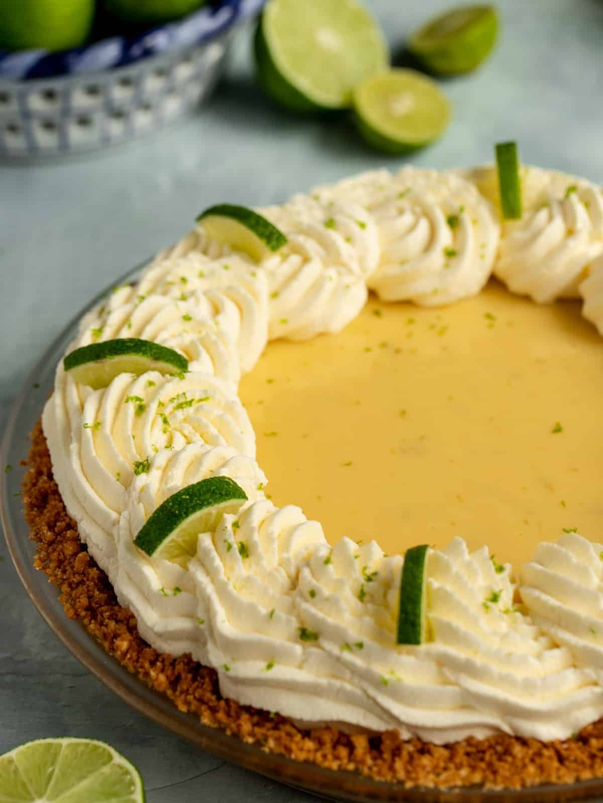
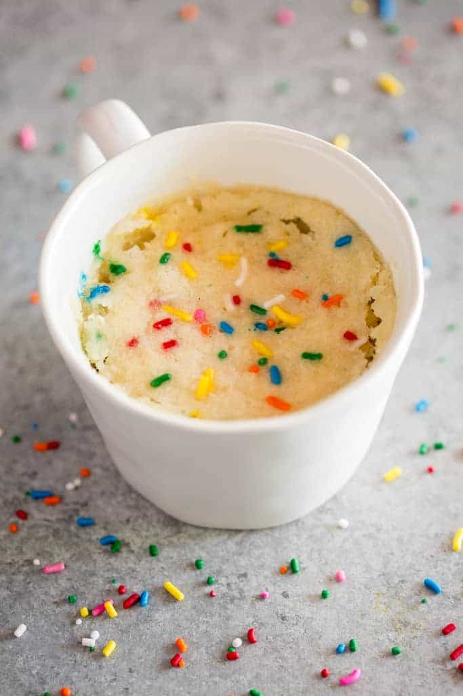

Colombian Rice Pudding Recipe
Rice pudding, or arroz con leche, is a creamy dessert enjoyed worldwide. This variation, a Colombian style, requires a lot of patience in its preparation. Basic ingredients like rice, milk, and sugar are simmered to perfection, which demands constant stirring over a span of one to two hours depending on the size of the batch you make. If the milk burns, the dessert is ruined so you must always be close by to check.

Key Lime Pie Recipe
This key lime pie recipe, which won an award in a pie competition in a 1999 Pie Championship, is a breeze to make. Simply mix together beaten egg yolks, sweetened condensed milk, and key lime juice, and pour it into a graham cracker crust. Bake until it's set, garnish with some lime slices and whipped cream, and it's ready to be eaten!

Vanilla Mug Cake Recipe
For the easiest recipe on my page it's the Vanilla Mug Cake, a dessert you can make in around 5 minutes. Simply mix together flour, sugar, baking powder, salt, milk, melted butter, and vanilla in a microwave safe mug. Add sprinkles if desired, and microwave for 70-90 seconds. It's a fast and easy recipe you can make in a dorm kitchen!
